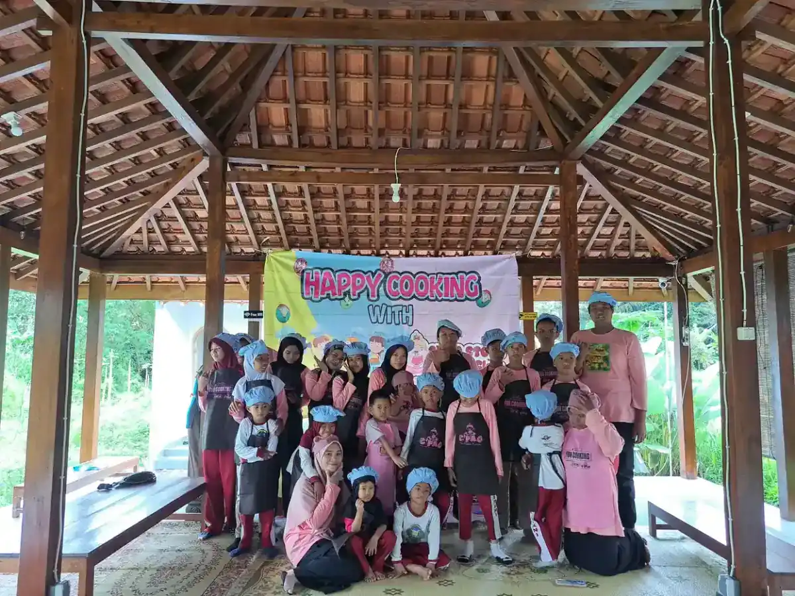

Donasi online telah menjadi salah satu cara paling mudah dan efektif untuk menyalurkan kepedulian terhadap sesama, terutama bagi pendidikan anak berkebutuhan khusus (ABK). Di tengah kemajuan teknologi digital, berdonasi tidak lagi memerlukan proses yang rumit. Cukup dengan beberapa langkah melalui smartphone atau komputer, Anda sudah bisa membantu mewujudkan mimpi anak-anak yang membutuhkan perhatian dan pendampingan khusus dalam pendidikan mereka.
Di Indonesia, jutaan anak berkebutuhan khusus masih menghadapi tantangan besar dalam mengakses pendidikan yang layak. Data Kementerian Pendidikan, Kebudayaan, Riset, dan Teknologi mencatat bahwa masih banyak ABK yang belum terlayani di sekolah formal. Salah satu hambatan utamanya adalah keterbatasan biaya, baik untuk sekolah, terapi, alat bantu, maupun pendampingan khusus yang mereka butuhkan. Di sinilah peran donasi online pendidikan menjadi sangat krusial.
Yayasan Ukhuwah Kaffah Amanatullah (YUKA) hadir sebagai lembaga sosial dan pendidikan yang berfokus pada pendampingan anak berkebutuhan khusus melalui Sekolah Inklusi Taruna Imani di Sleman, Yogyakarta. Melalui artikel ini, kami ingin mengajak Anda memahami lebih dalam tentang berbagai cara berdonasi secara online, program CSR pendidikan, penyaluran zakat untuk pendidikan, serta bagaimana setiap kontribusi Anda berdampak nyata bagi kehidupan anak-anak istimewa ini.
Daftar Isi
- Mengapa Donasi untuk Pendidikan ABK Penting?
- Cara Donasi Online yang Aman dan Terpercaya
- Program CSR Pendidikan untuk Anak Berkebutuhan Khusus
- Zakat untuk Pendidikan: Hukum dan Penyalurannya
- Jenis-Jenis Donasi yang Bisa Diberikan
- Tips Memilih Lembaga Donasi yang Terpercaya
- Program Donasi dan CSR di YUKA
- FAQ Seputar Donasi Online untuk Pendidikan ABK
Mengapa Donasi untuk Pendidikan ABK Penting?
Pendidikan adalah hak dasar setiap anak, tanpa terkecuali. Namun kenyataannya, anak berkebutuhan khusus sering kali menghadapi hambatan berlapis dalam mengakses pendidikan yang berkualitas. Biaya terapi, kebutuhan akan guru pendamping khusus, alat bantu belajar yang spesifik, dan lingkungan sekolah yang ramah disabilitas memerlukan investasi yang tidak sedikit. Untuk memahami lebih jauh tentang siapa saja yang termasuk difabel dan bagaimana hak-hak mereka dilindungi, penting bagi kita semua untuk terus belajar dan berempati.
Menurut data dari Badan Pusat Statistik (BPS), masih banyak penyandang disabilitas di Indonesia yang belum mendapatkan akses pendidikan formal. Angka partisipasi sekolah untuk anak disabilitas masih jauh di bawah rata-rata nasional. Kondisi ini semakin diperparah oleh stigma sosial yang masih kuat di masyarakat, di mana banyak orang tua yang merasa malu atau tidak tahu harus membawa anaknya ke mana untuk mendapatkan pendidikan yang sesuai.
Donasi online hadir sebagai solusi untuk menjembatani kesenjangan ini. Dengan berdonasi, Anda turut membantu:
- Membiayai pendidikan ABK yang berasal dari keluarga kurang mampu, sehingga mereka tidak putus sekolah dan tetap bisa mengembangkan potensinya.
- Menyediakan alat terapi dan media belajar yang sesuai dengan kebutuhan masing-masing anak, karena setiap ABK memiliki kebutuhan yang berbeda-beda.
- Mendanai pelatihan guru dan terapis agar tenaga pendidik semakin kompeten dalam menangani anak berkebutuhan khusus dengan berbagai kondisi.
- Membangun fasilitas sekolah yang inklusif sehingga anak-anak ABK bisa belajar dengan nyaman dan aman bersama teman-teman sebayanya.
- Mendukung program pemberdayaan keluarga agar orang tua ABK juga mendapatkan edukasi dan pendampingan dalam merawat anak mereka di rumah.
Setiap rupiah yang Anda donasikan bukan sekadar angka. Itu adalah kesempatan bagi seorang anak untuk bisa membaca, menulis, berhitung, bersosialisasi, dan bermimpi tentang masa depan yang lebih cerah. Di YUKA, kami menyaksikan sendiri bagaimana donasi dari para dermawan telah mengubah kehidupan banyak anak berkebutuhan khusus dan keluarga mereka.
"Pendidikan bukan hanya soal akademik. Bagi anak berkebutuhan khusus, pendidikan adalah pintu menuju kemandirian, kepercayaan diri, dan kehidupan yang bermartabat." - Tim YUKA
Cara Donasi Online yang Aman dan Terpercaya
Di era digital saat ini, donasi online bisa dilakukan dengan sangat mudah. Namun, kemudahan ini juga harus diimbangi dengan kewaspadaan agar donasi Anda benar-benar sampai kepada penerima yang tepat. Berikut adalah panduan lengkap cara berdonasi secara online dengan aman dan terpercaya.
1. Transfer Bank Langsung
Cara paling umum dan terpercaya untuk melakukan sedekah online adalah melalui transfer bank langsung ke rekening resmi lembaga. Pastikan Anda mentransfer ke rekening atas nama lembaga atau yayasan, bukan atas nama perorangan. Untuk donasi ke YUKA, Anda bisa melakukan transfer ke:
Rekening Donasi Resmi YUKA
Bank BSI (Bank Syariah Indonesia)
772 286 2585
a.n. Yayasan Ukhuwah Kaffah Amanatullah
2. Donasi Melalui Platform Digital
Selain transfer bank, banyak platform donasi online yang bisa menjadi perantara. Platform-platform ini biasanya sudah memiliki sistem verifikasi lembaga, sehingga memberikan lapisan keamanan tambahan bagi donatur. Beberapa keuntungan menggunakan platform donasi digital antara lain:
- Proses verifikasi lembaga penerima yang ketat
- Laporan penggunaan dana yang transparan
- Kemudahan pembayaran melalui berbagai metode (e-wallet, kartu kredit, virtual account)
- Fitur donasi rutin atau berlangganan
- Bukti donasi otomatis yang bisa diunduh
3. Donasi Melalui E-Wallet dan QRIS
Perkembangan teknologi finansial (fintech) membuat donasi online semakin praktis. Dengan e-wallet seperti GoPay, OVO, DANA, atau ShopeePay, Anda bisa berdonasi kapan saja dan di mana saja. Sistem QRIS (Quick Response Code Indonesian Standard) juga memungkinkan pembayaran lintas platform dengan satu kode QR.
4. Tips Keamanan Berdonasi Online
Untuk memastikan keamanan donasi online Anda, perhatikan hal-hal berikut:
- Verifikasi identitas lembaga - pastikan lembaga memiliki izin resmi, akta pendirian, dan NPWP.
- Periksa rekening resmi - rekening harus atas nama lembaga atau yayasan, bukan perseorangan.
- Simpan bukti transfer - selalu simpan bukti donasi Anda untuk arsip pribadi.
- Konfirmasi penerimaan - hubungi lembaga untuk mengonfirmasi bahwa donasi sudah diterima.
- Pantau laporan kegiatan - lembaga yang baik akan memberikan laporan penggunaan dana secara berkala.

Program CSR Pendidikan untuk Anak Berkebutuhan Khusus
CSR pendidikan atau Corporate Social Responsibility di bidang pendidikan adalah bentuk tanggung jawab sosial perusahaan untuk berkontribusi terhadap kemajuan pendidikan di masyarakat. Dalam konteks pendidikan ABK, program CSR memiliki peran yang sangat strategis karena mampu memberikan dampak besar dan berkelanjutan.
Undang-Undang Nomor 40 Tahun 2007 tentang Perseroan Terbatas mewajibkan perusahaan yang berkaitan dengan sumber daya alam untuk melaksanakan CSR. Namun, semakin banyak perusahaan dari berbagai sektor yang secara sukarela menjalankan program CSR sebagai bentuk komitmen mereka terhadap pembangunan sosial. Salah satu bidang yang paling berdampak untuk program CSR adalah pendidikan, khususnya pendidikan inklusi untuk anak berkebutuhan khusus.
Bentuk Program CSR Pendidikan untuk ABK
Perusahaan yang ingin menjalankan CSR pendidikan untuk anak berkebutuhan khusus bisa memilih dari berbagai bentuk program berikut:
- Sponsorship program pendidikan inklusi - mendanai operasional sekolah inklusi, termasuk gaji guru pendamping khusus, biaya terapi, dan kegiatan belajar mengajar.
- Pembangunan fasilitas ramah disabilitas - membangun atau merenovasi gedung sekolah agar aksesibel bagi semua anak, termasuk pembangunan jalur kursi roda, toilet ramah disabilitas, dan ruang terapi.
- Beasiswa pendidikan ABK - menyediakan beasiswa bagi siswa ABK dari keluarga kurang mampu agar mereka tetap bisa bersekolah dan mendapatkan terapi yang dibutuhkan.
- Pelatihan dan pengembangan SDM - mendanai pelatihan bagi guru, terapis, dan pendamping ABK agar kualitas layanan pendidikan terus meningkat.
- Penyediaan alat bantu dan teknologi - menyumbangkan peralatan terapi, alat bantu dengar, kacamata, kursi roda, komputer adaptif, dan teknologi assistif lainnya.
- Program magang dan pelatihan kerja - menciptakan kesempatan magang dan pelatihan kerja bagi ABK yang sudah remaja atau dewasa untuk mempersiapkan kemandirian mereka.
Manfaat CSR Pendidikan bagi Perusahaan
Menjalankan program CSR pendidikan untuk ABK tidak hanya bermanfaat bagi penerima, tetapi juga memberikan keuntungan bagi perusahaan:
- Meningkatkan citra dan reputasi perusahaan di mata publik
- Memenuhi kewajiban hukum terkait CSR
- Membangun hubungan baik dengan masyarakat dan stakeholder
- Meningkatkan motivasi dan kebanggaan karyawan terhadap perusahaan
- Memberikan dampak sosial yang terukur dan berkelanjutan
Bagi perusahaan yang ingin memulai program CSR pendidikan, bekerja sama dengan yayasan sosial anak berkebutuhan khusus yang sudah berpengalaman adalah langkah yang tepat. Yayasan seperti YUKA memiliki pemahaman mendalam tentang kebutuhan ABK dan dapat membantu merancang program CSR yang tepat sasaran dan berdampak nyata.
Tahukah Anda?
Program CSR pendidikan untuk ABK memiliki dampak berlipat ganda. Selain membantu anak secara langsung, program ini juga memberdayakan keluarga, meningkatkan kesadaran masyarakat tentang inklusi, dan pada akhirnya berkontribusi pada pembangunan sumber daya manusia Indonesia yang lebih berkualitas dan berkeadilan.
Zakat untuk Pendidikan: Hukum dan Penyalurannya
Zakat untuk pendidikan adalah salah satu bentuk penyaluran zakat yang memiliki landasan kuat dalam Islam. Pendidikan merupakan kebutuhan dasar manusia, dan Islam sangat mendorong umatnya untuk menuntut ilmu. Menyalurkan zakat untuk membantu pendidikan anak berkebutuhan khusus merupakan amal yang sangat mulia dan memiliki pahala berlipat ganda.
Landasan Hukum Zakat untuk Pendidikan
Dalam Al-Quran Surat At-Taubah ayat 60, Allah SWT menyebutkan delapan golongan yang berhak menerima zakat (mustahik), yaitu fakir, miskin, amil zakat, muallaf, untuk memerdekakan budak, gharimin (orang yang berutang), fi sabilillah, dan ibnu sabil. Anak berkebutuhan khusus dari keluarga kurang mampu dapat masuk ke dalam beberapa kategori mustahik:
- Fakir dan miskin - ABK dari keluarga yang tidak mampu membiayai pendidikan dan terapinya termasuk dalam golongan ini.
- Fi sabilillah - banyak ulama kontemporer yang menafsirkan fi sabilillah secara luas, termasuk di dalamnya mendanai pendidikan dan kegiatan yang bermanfaat bagi kemaslahatan umat.
Majelis Ulama Indonesia (MUI) dalam beberapa fatwanya juga membolehkan penyaluran zakat untuk kepentingan pendidikan, khususnya bagi mereka yang termasuk dalam kategori mustahik. Dengan demikian, menyalurkan zakat untuk pendidikan ABK memiliki dasar syar'i yang kuat.
Jenis Zakat yang Bisa Disalurkan untuk Pendidikan
- Zakat mal (harta) - zakat yang dikeluarkan dari harta yang sudah mencapai nisab dan haul. Ini adalah jenis zakat yang paling umum disalurkan untuk program pendidikan.
- Zakat fitrah - walaupun umumnya disalurkan pada bulan Ramadhan, zakat fitrah juga bisa diberikan kepada mustahik termasuk ABK dari keluarga tidak mampu.
- Infak dan sedekah - berbeda dengan zakat yang memiliki ketentuan khusus, infak dan sedekah online bisa disalurkan kapan saja dan dalam jumlah berapa pun untuk mendukung pendidikan ABK.
Cara Menyalurkan Zakat untuk Pendidikan ABK
Untuk memastikan zakat untuk pendidikan Anda disalurkan dengan benar, berikut langkah-langkah yang perlu diperhatikan:
- Hitung zakat Anda - pastikan harta Anda sudah memenuhi nisab (setara 85 gram emas) dan haul (dimiliki selama satu tahun hijriyah).
- Pilih lembaga yang amanah - salurkan melalui lembaga yang memiliki legalitas resmi, program yang jelas, dan laporan keuangan yang transparan.
- Niatkan dengan ikhlas - niatan yang tulus adalah kunci dari setiap ibadah, termasuk zakat.
- Minta bukti penyaluran - lembaga yang terpercaya akan memberikan bukti penerimaan dan laporan penyaluran zakat.
- Pantau dampaknya - ikuti perkembangan program yang didanai dari zakat Anda untuk memastikan manfaatnya benar-benar dirasakan.

Jenis-Jenis Donasi yang Bisa Diberikan
Banyak orang berpikir bahwa donasi online hanya berupa uang tunai. Padahal, ada berbagai bentuk donasi yang bisa diberikan untuk mendukung pendidikan anak berkebutuhan khusus. Setiap bentuk kontribusi, sekecil apa pun, memiliki nilai dan manfaat yang besar bagi penerima. Untuk mengetahui lebih dalam tentang program pemberdayaan anak berkebutuhan khusus, Anda bisa membaca artikel terkait di website kami.
1. Donasi Finansial (Uang)
Donasi berupa uang adalah bentuk yang paling fleksibel karena bisa dialokasikan sesuai kebutuhan yang paling mendesak. Donasi finansial bisa digunakan untuk:
- Biaya operasional sekolah inklusi
- Gaji guru dan terapis
- Biaya terapi anak (terapi wicara, terapi okupasi, terapi sensori integrasi)
- Beasiswa pendidikan ABK
- Biaya makan dan transportasi siswa
- Pengembangan kurikulum dan program pembelajaran
2. Donasi Barang
Jika Anda memiliki barang-barang yang bisa bermanfaat untuk pendidikan ABK, jangan ragu untuk menyumbangkannya. Beberapa jenis barang yang sangat dibutuhkan antara lain:
- Alat-alat terapi (bola terapi, balance board, puzzle taktil)
- Buku pelajaran dan buku cerita bergambar
- Alat tulis dan perlengkapan sekolah
- Mainan edukatif yang aman
- Komputer atau laptop bekas yang masih berfungsi baik
- Alat musik untuk terapi musik
- Peralatan dapur untuk program kelas memasak (cooking class)
- Pakaian seragam dan pakaian layak pakai
3. Donasi Keahlian (Skill-Based Volunteering)
Anda memiliki keahlian yang bisa bermanfaat untuk ABK? Pertimbangkan untuk menjadi relawan dengan menyumbangkan waktu dan keahlian Anda:
- Terapis profesional - memberikan layanan terapi gratis atau dengan biaya terjangkau
- Guru atau tutor - mengajar mata pelajaran tertentu atau menjadi pendamping belajar
- Desainer atau IT - membantu pembuatan media pembelajaran digital
- Psikolog atau konselor - memberikan pendampingan psikologis bagi anak dan keluarga
- Chef atau koki - mengajar kelas memasak sebagai terapi bagi ABK
- Pemusik atau seniman - mengajar seni dan musik sebagai media terapi
4. Donasi Wakaf
Wakaf untuk pendidikan adalah bentuk donasi yang pahalanya terus mengalir selama manfaatnya masih dirasakan. Anda bisa berwakaf dalam bentuk tanah, bangunan, atau aset produktif yang hasilnya digunakan untuk membiayai pendidikan ABK. Wakaf pendidikan termasuk dalam kategori sadaqah jariyah yang sangat dianjurkan dalam Islam.
5. Donasi Rutin (Recurring Donation)
Donasi rutin bulanan, meskipun dalam jumlah kecil, memberikan dampak yang sangat besar bagi kelangsungan program pendidikan ABK. Dengan donasi rutin, lembaga bisa merencanakan program jangka panjang dengan lebih baik karena memiliki kepastian pemasukan. Anda bisa mengatur donasi online rutin melalui auto-debit rekening bank atau fitur pembayaran berulang di platform donasi digital.
Kisah Inspiratif: Donasi Kecil, Dampak Besar
Di YUKA, kami pernah menerima donasi rutin sebesar Rp50.000 per bulan dari seorang mahasiswa. Ia konsisten berdonasi selama dua tahun. Akumulasi donasinya membantu membiayai terapi wicara seorang anak dengan keterlambatan bicara selama setahun penuh. Kini, anak tersebut sudah bisa berkomunikasi dengan jauh lebih baik. Kisah ini membuktikan bahwa tidak ada donasi yang terlalu kecil.
Tips Memilih Lembaga Donasi yang Terpercaya
Memilih lembaga donasi yang tepat dan terpercaya adalah langkah penting untuk memastikan donasi online Anda benar-benar bermanfaat. Sayangnya, tidak sedikit oknum yang memanfaatkan kedermawanan masyarakat untuk kepentingan pribadi. Oleh karena itu, berikut tips yang perlu Anda perhatikan sebelum menyalurkan donasi:
1. Periksa Legalitas Lembaga
Lembaga donasi yang terpercaya harus memiliki legalitas yang lengkap, antara lain:
- Akta pendirian yayasan atau organisasi yang disahkan notaris
- SK Kemenkumham (Surat Keputusan Kementerian Hukum dan HAM)
- NPWP (Nomor Pokok Wajib Pajak) atas nama lembaga
- Izin operasional dari dinas terkait
- Terdaftar di lembaga pengawas atau asosiasi terkait
Untuk panduan lebih lengkap tentang cara memilih yayasan anak berkebutuhan khusus yang tepat, Anda bisa membaca artikel khusus yang telah kami siapkan.
2. Cek Transparansi Keuangan
Lembaga yang baik akan secara rutin mempublikasikan laporan keuangannya. Periksa apakah lembaga tersebut menyediakan:
- Laporan keuangan tahunan yang bisa diakses publik
- Rincian penggunaan dana donasi
- Laporan kegiatan program yang didanai dari donasi
- Informasi mengenai persentase dana yang digunakan untuk operasional versus program
3. Kunjungi Lokasi Secara Langsung
Jika memungkinkan, kunjungi lokasi kegiatan lembaga secara langsung. Lihat dengan mata kepala sendiri bagaimana program dijalankan, bagaimana kondisi penerima manfaat, dan bagaimana staf berinteraksi dengan anak-anak. Kunjungan langsung akan memberikan gambaran yang jauh lebih akurat dibandingkan hanya melihat dari website atau media sosial.
4. Perhatikan Reputasi dan Track Record
- Cari testimoni dan ulasan dari donatur sebelumnya
- Periksa keaktifan di media sosial dan website resmi
- Cari tahu sudah berapa lama lembaga tersebut beroperasi
- Tanyakan pencapaian dan dampak program yang sudah berjalan
5. Pastikan Rekening Atas Nama Lembaga
Hal yang sangat penting: rekening donasi harus atas nama lembaga atau yayasan, bukan atas nama perseorangan. Jika diminta transfer ke rekening pribadi, sebaiknya Anda berhati-hati dan melakukan verifikasi lebih lanjut sebelum berdonasi.

Program Donasi dan CSR di YUKA
Yayasan Ukhuwah Kaffah Amanatullah (YUKA) adalah lembaga sosial dan pendidikan yang didirikan dengan visi memberikan pendidikan inklusif berkualitas bagi anak berkebutuhan khusus di Yogyakarta dan sekitarnya. Melalui Sekolah Inklusi Taruna Imani di Sleman, YUKA telah mendampingi puluhan anak dengan berbagai kondisi, mulai dari autisme, ADHD, down syndrome, cerebral palsy, keterlambatan bicara, hingga gangguan belajar lainnya.
Peran orang tua dalam pendidikan inklusi sangat penting, dan YUKA selalu melibatkan keluarga dalam setiap program yang dijalankan. Dengan dukungan donasi dari masyarakat, kami dapat terus mengembangkan program yang komprehensif dan berkelanjutan.
Program yang Didanai dari Donasi
Setiap donasi anak berkebutuhan khusus yang masuk ke YUKA dialokasikan untuk berbagai program berikut:
- Program Pendidikan Inklusi - menyelenggarakan kegiatan belajar mengajar di Sekolah Inklusi Taruna Imani dengan kurikulum yang diadaptasi sesuai kebutuhan masing-masing siswa.
- Program Terapi Terpadu - menyediakan layanan terapi wicara, terapi okupasi, terapi sensori integrasi, dan terapi perilaku bagi siswa yang membutuhkan.
- Program Kelas Memasak (Cooking Class) - mengadakan kelas memasak sebagai media terapi yang menyenangkan untuk melatih motorik halus, fokus, kerja sama, dan kemandirian anak.
- Program Kunjungan Edukasi - mengajak anak-anak ABK untuk belajar di luar kelas, mengunjungi tempat-tempat edukatif seperti museum, kebun binatang, dan tempat wisata budaya.
- Program Pemberdayaan Orang Tua - memberikan pelatihan dan pendampingan bagi orang tua ABK agar mereka bisa mendukung tumbuh kembang anak secara optimal di rumah.
- Program Beasiswa - memberikan beasiswa pendidikan bagi siswa ABK dari keluarga kurang mampu agar mereka tetap bisa mengakses pendidikan berkualitas.
Mengapa Berdonasi ke YUKA?
Ada beberapa alasan mengapa YUKA layak menjadi pilihan Anda dalam menyalurkan donasi online pendidikan:
- Legalitas lengkap - YUKA terdaftar resmi sebagai yayasan dengan akta notaris, SK Kemenkumham, dan NPWP.
- Pengalaman mendampingi ABK - tim YUKA terdiri dari tenaga pendidik dan pendamping yang berpengalaman dalam menangani anak berkebutuhan khusus.
- Program berbasis bukti - setiap program dirancang berdasarkan kebutuhan nyata di lapangan dan mengacu pada metode yang sudah terbukti efektif.
- Transparansi - YUKA berkomitmen pada transparansi pengelolaan dana dan secara berkala melaporkan penggunaan donasi kepada para donatur.
- Dampak terukur - setiap perkembangan anak didokumentasikan sehingga dampak donasi bisa dirasakan dan dilihat secara nyata.
- Rekening resmi atas nama yayasan - donasi ditransfer ke rekening Bank BSI 772 286 2585 atas nama Yayasan Ukhuwah Kaffah Amanatullah.
Kerja Sama CSR dengan YUKA
Bagi perusahaan yang ingin menjalankan program CSR pendidikan, YUKA membuka peluang kerja sama yang saling menguntungkan. Kami siap membantu merancang program CSR yang sesuai dengan visi perusahaan Anda sekaligus memberikan dampak nyata bagi pendidikan anak berkebutuhan khusus. Bentuk kerja sama yang bisa dilakukan antara lain:
- Sponsorship program pendidikan dan terapi
- Pendanaan pembangunan atau renovasi fasilitas sekolah
- Program employee volunteering (relawan karyawan)
- Cause-related marketing (pemasaran berbasis sosial)
- Pendanaan program pelatihan keterampilan bagi ABK
Untuk informasi lebih lanjut tentang program donasi dan kerja sama CSR, silakan kunjungi halaman donasi YUKA atau hubungi kami melalui WhatsApp di nomor +62 812-2991-2332.
Salurkan Donasi Anda Sekarang
Setiap donasi Anda, sekecil apa pun, memberikan dampak besar bagi pendidikan anak berkebutuhan khusus.
Bank BSI (Bank Syariah Indonesia)
772 286 2585
a.n. Yayasan Ukhuwah Kaffah Amanatullah
FAQ Seputar Donasi Online untuk Pendidikan ABK
Berikut adalah pertanyaan yang sering diajukan terkait donasi online untuk pendidikan anak berkebutuhan khusus:
1. Bagaimana cara donasi online untuk pendidikan anak berkebutuhan khusus di YUKA?
Anda bisa melakukan donasi online untuk pendidikan ABK di YUKA melalui transfer ke rekening Bank BSI (Bank Syariah Indonesia) dengan nomor rekening 772 286 2585 atas nama Yayasan Ukhuwah Kaffah Amanatullah. Anda juga bisa mengunjungi halaman donasi di website yukaindonesia.com untuk informasi lebih lengkap tentang cara berdonasi.
2. Apakah donasi untuk pendidikan ABK bisa dijadikan zakat?
Ya, donasi untuk pendidikan ABK bisa disalurkan melalui zakat untuk pendidikan, khususnya zakat mal. Dalam fikih Islam, anak berkebutuhan khusus yang berasal dari keluarga kurang mampu termasuk dalam kategori mustahik (penerima zakat), terutama dalam golongan fakir, miskin, atau fi sabilillah. Pastikan penyaluran zakat dilakukan melalui lembaga yang amanah dan memiliki legalitas resmi.
3. Apa saja jenis donasi yang bisa diberikan selain uang?
Selain donasi berupa uang, Anda bisa memberikan donasi anak berkebutuhan khusus dalam bentuk alat-alat terapi dan pembelajaran, buku dan media edukasi, pakaian layak pakai, bahan makanan pokok, keahlian profesional (seperti menjadi relawan pengajar atau terapis), serta peralatan sekolah. Setiap bentuk bantuan sangat berarti bagi keberlangsungan program pendidikan ABK.
4. Bagaimana perusahaan bisa menjalankan program CSR pendidikan untuk ABK?
Perusahaan bisa menjalankan program CSR pendidikan untuk ABK melalui beberapa cara, antara lain: sponsorship program pendidikan inklusi, penyediaan fasilitas dan infrastruktur sekolah, pelatihan keterampilan bagi anak dan orang tua ABK, beasiswa pendidikan bagi siswa ABK, serta kerja sama program magang atau pelatihan kerja bagi ABK yang sudah remaja atau dewasa. Hubungi YUKA untuk konsultasi program CSR yang tepat.
5. Apakah donasi di YUKA mendapatkan laporan penggunaan dana?
Ya, YUKA berkomitmen pada transparansi dan akuntabilitas dalam pengelolaan donasi. Setiap donatur akan mendapatkan informasi mengenai penggunaan dana melalui laporan kegiatan yang dipublikasikan secara berkala. YUKA juga memiliki legalitas lengkap sebagai yayasan yang terdaftar resmi, sehingga donatur dapat merasa aman dan yakin bahwa donasi online mereka disalurkan dengan tepat sasaran.